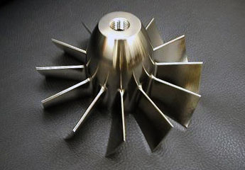
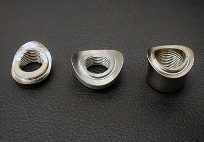
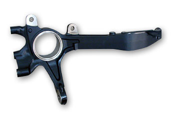
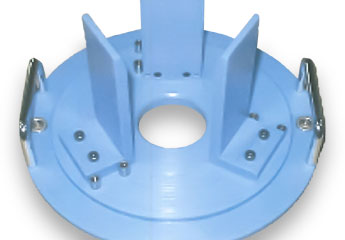
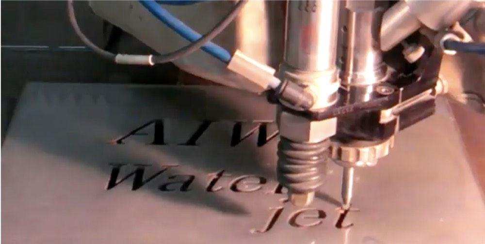
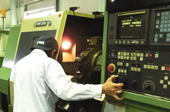
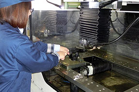
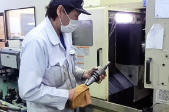
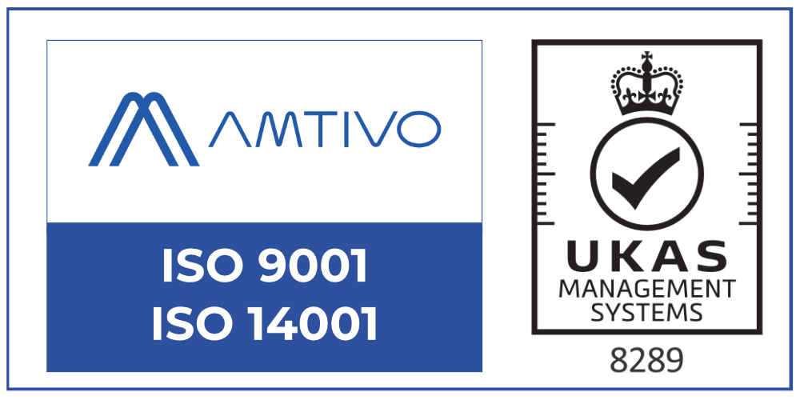

栃木県さくら市・1963年創業
インコネルも、64チタンも。
試作の切削なら。
5軸マシニングを主体とした試作切削の専門です。鉄、銅、アルミ、インコネル、64チタン。加工技術に制限を持たないチャレンジ精神で、数千以上の試作をこなしてきました。治具は社内で製作するため、外部との打ち合わせ工数はゼロです。

13台
マシニングセンタ
4台
5軸制御機
20名
従業員数
1963年
創業
DIFFICULT MATERIALS
削りにくい材料ほど
加工技術に制限を持たないチャレンジ精神で製品作りに取り組んでいます。常に試作を追い続け、難しい加工を好んでやってきました。それにより技術力の維持向上ができています。
- インコネル
- 64チタン
- 純チタン
- ステンレス
- 鉄
- 銅
- アルミ



SHORT LEAD TIME
超短納期の理由
すばやい決断と効率的な加工が超短納期を実現します。一目見れば、どういった治具を使いどういう加工をすればよいのかすぐに判断できます。加工に必要な治具は社内で製作するため、外部との打ち合わせ工数はゼロです。
13台を汎用として使う
マシニング13台を専用ではなく汎用として使用しています。そのため、ご依頼をいただいたら即座に対応できます。5軸マシニングも4台所有しています。常に試作が飛び込んでくるため、段取り替えや設備操作は全員が対応可能です。
ウォータージェット＋マシニング
ウォータージェットは加工速度が速く、時間を一気に短縮できます。さらに精度を上げる工夫をしているため、条件によっては後加工不要の精度が出せます。高精度なものはウォータージェットで粗取りし、マシニングで仕上げます。
自社で三次元測定
三次元測定機を自社で保有しているため、機械加工後すぐに寸法測定ができます。三次元測定機には専門の担当者を付けており、測定時間も短時間で済むよう工夫しています。

量産トラブルのフォロー
基本的に量産は行っていません。ただし、お客様がどうしても間に合わないという場合は、量産立ち上げ前の製造や、立ち上げ後の急なトラブルに対応します。ラインが止まらないよう加工のサポートを行います。単発での急なトラブルはご相談ください。
治具製作も一緒に
試作の切削と同時に治具の製作も行っています。社内で治具を使うため、用途を教えていただければ作業者目線での設計をお手伝いできます。ただ単に作るのではなく、一緒に作り上げていくことを大切にしています。
SHOP
現場



FACILITIES
設備一覧
| 名称 | メーカー | スペック | 台数 |
|---|---|---|---|
| MILLAC 1000VH | 大隈豊和 | X1650 Y1300 Z1000／B150°／APC／5軸同時制御 | 1 |
| MILLAC 1000VH | オークマ | X1650 Y1300 Z1000／B150°／APC／5軸同時制御 | 1 |
| VMP-10 | 大隈豊和 | X1650 Y1000 Z1500／B150°／5軸同時制御 | 1 |
| ML-300 | 大隈豊和 | X550 Y300 Z415／φ200 L150／5軸制御 | 1 |
| MB-56VB | オークマ | X1050 Y560 Z460／主軸・環境 熱変異制御 | 2 |
| VM5Ⅲ | 大阪機工 | X1020 Y510 Z510 | 2 |
| VM7Ⅲ | 大阪機工 | X1020 Y740 Z660 | 1 |
| PCV510 | 大阪機工 | X1020 Y570 Z510 | 1 |
| PCV50 | 大阪機工 | X720 Y520 Z510／APC | 1 |
| MILLAC-4VA | 大隈豊和 | X780 Y410 Z650 | 1 |
| MILLAC-40H | 大隈豊和 | X560 Y550 Z560／横型／6連APC | 1 |
| 合計 | — | 13 | |
| 名称 | メーカー | 備考 | 台数 |
|---|---|---|---|
| V60R | オークマ | φ610 L660／立型 | 1 |
| LB4000EX | オークマ | φ330 L700 | 1 |
| HL-20 | 大隈豊和 | φ300 L350／四つ爪 | 1 |
| SL-25 | 森精機 | φ250 L1000 | 1 |
| SL-20 | 森精機 | φ200 L500 | 1 |
| 名称 | 機種 | メーカー | 備考 | 台数 |
|---|---|---|---|---|
| ワイヤーカット | ROBOCUT α-C600iA | FANUC | 縦400×横600×高さ400 | 1 |
| NCフライス | 2R-NC | 大隈豊和 | — | 1 |
| 汎用フライス | STM-2R | 大隈豊和 | — | 3 |
| 汎用旋盤 | — | TAKIZAWA | — | 1 |
| レーザー彫刻機 | M300-50W | UNIVERSAL | デザインソフト CorelDRAW | 1 |
| 三次元測定機 | B-706 | ミツトヨ | — | 1 |
| 形状測定機 | CV-3000H4 | ミツトヨ | — | 1 |
| 真円度測定機 | RA-116 | ミツトヨ | — | 1 |
| 表面粗さ測定機 | SURFTEST301 | ミツトヨ | — | 1 |
| プログラム作成機 | MASTER CAM | JBM | 5軸形状 | 2 |
| プログラム作成機 | CADmeister／CADCEUS | 日本ユニシス | 3軸形状 | 2 |
| プログラム作成機 | Super21 | タクテックス | 2.7軸形状 | 1 |
| プログラム作成機 | T-CAD1 | タクテックス | 2.5軸形状 | 2 |
| プログラム作成機 | ナスカ | 合同ソリューション | 2.5軸形状 | 1 |
※ 機械切削のほか、ワイヤー放電加工、レーザーによる非鉄金属の彫刻・カット、金属（アルミ・ステンレスも可）へのマーキングも承ります。協力メーカーを通じて熱処理・表面処理・溶接・研磨にも対応できます。
ABOUT US
会社概要
顧客思考の物づくりを行う。技術を磨き、人に誇れる物づくりを行う。

ISO9001（2002年取得）およびISO14001（2004年取得）の認証を受けています。適用範囲は栃木県さくら市氏家3473-1の全部署、自動車関連部品の製造（主として試作部品・金属加工）です。
- 社名
- 有限会社 愛和精密製作所
ユウゲンガイシャ アイワセイミツセイサクショ - 代表者
- 榎本 覚
- 住所
- 〒329-1311 栃木県さくら市氏家3473-1
TEL 028-682-7283 ／ FAX 028-682-7289 - 資本金
- 300万円
- 従業員
- 20名
- 取り扱い商品
- 自動車関連部品の精密機械加工技術の提供（試作部品、治具、金型 等）
- 加工内容
- 5軸マシニングを主体とした精密機械加工
ほかにワイヤー加工、レーザー刻印、ウォータージェット加工 等
協力メーカーを通じた熱処理・表面処理・溶接・研磨加工も対応可能 - 得意分野
- 加工技術に制限を持たないチャレンジ精神で製品作りに取り組む
鉄、銅、アルミ、64チタン等の難削材 - 主要取引先
- 株式会社本田技術研究所 四輪開発センター／株式会社ユタカ技研／株式会社ショーワ／武蔵精密工業株式会社／株式会社都筑製作所
（順不同・敬称略） - 敷地・建物
- 敷地 1,320㎡／建物 1,030㎡（2004年の増設時）
沿革
- 1963.12
- 有限会社愛和精密製作所を創設。東京板橋にて自動車部品の量産を開始
- 1989
- 事業の拡大に伴い、栃木県さくら市（旧氏家町）に栃木工場を設立
- 1991
- 栃木工場を本社とし、板橋工場を閉鎖。川越に営業所を設立
- 1995
- 資本金を300万円に増資
- 2002
- ISO9001 の認証を取得
- 2004
- 栃木工場を増設（敷地1,320㎡／建物1,030㎡）。ISO14001 認証を取得
図面を見れば、加工工程が浮かびます。
数千以上の試作をこなしてきました。インコネル、64チタン、複雑形状。他社で難しいと言われた試作こそ、ご相談ください。治具の製作からご一緒します。
028-682-7283
FAX 028-682-7289
〒329-1311 栃木県さくら市氏家3473-1